2026 // 05 / 31
crack实验 — IDA + x64dbg 逆向破解
这是一个简单的条件判断程序。通过 IDA 静态分析和 x64dbg 动态调试，修改程序的跳转逻辑，实现破解。
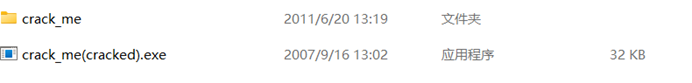
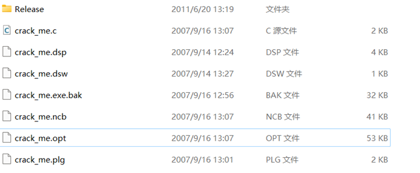
源码
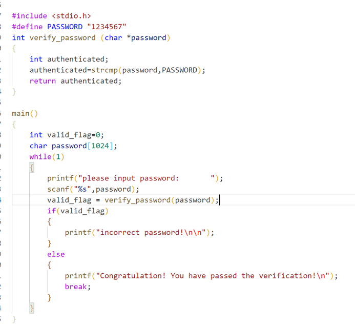
这是一次简单的条件判断程序。
exe 直接拖入 IDA 进行分析——release 版的 exe。
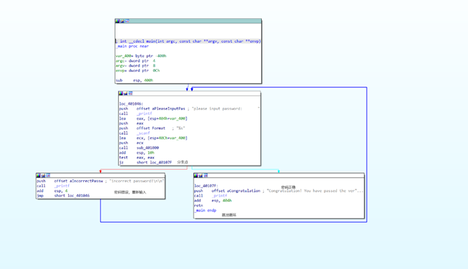
选中分支直接按空格。
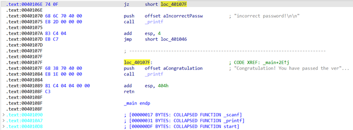
此时 VA 地址为 0010106e。用动态调试来看一下，看看怎么修改这个分支。
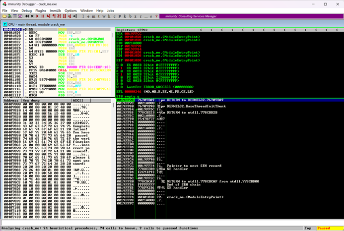
转换空格找到的地址。
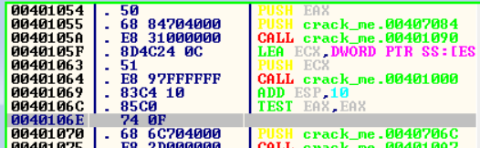
默认不是从 main 开始执行，F8 可以单步来看，看看开始之前干了什么。
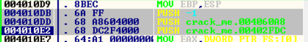
add push 压栈。
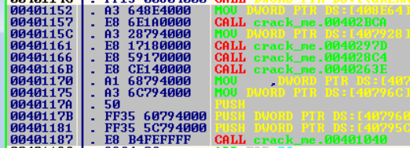
F7 能看见函数的代码（如果遇到了 F8 会翻车的函数）。按 Win+G 直接跳转到刚刚的地址。选择后 F2 下断点。
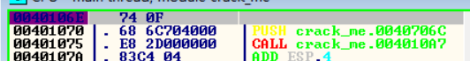
运行程序，F9 跑起来，弹出程序。
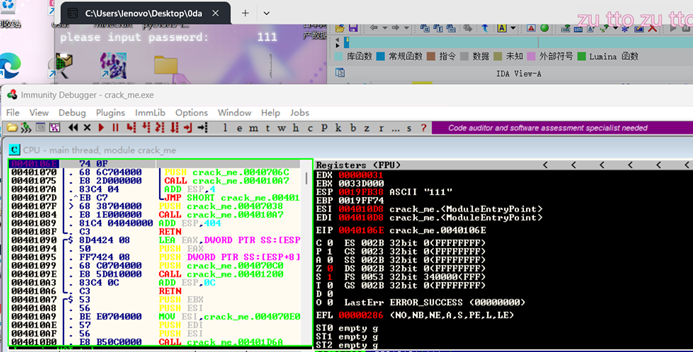
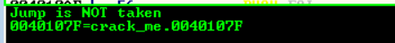
此时 EAX 寄存器内的值是 ffffffff。
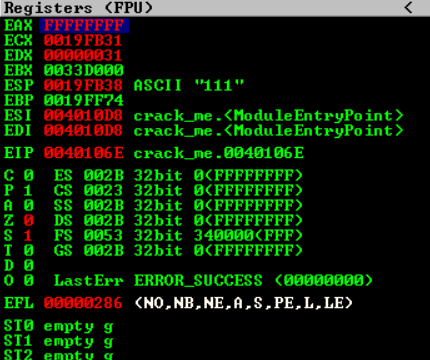
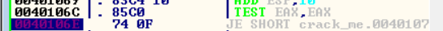
条件跳转是通过 test 和 je 实现的。将 je 修改为 jne 就可以实现反着来跳转。或者将 test 修改为 xor 的话，无论前面是什么结果，后面都会继续执行。双击之后就可以修改。
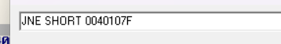
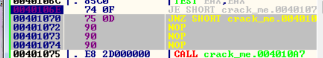
此时需要在二进制文件之中修改对应的字节。
已知 va = 00401106E
文件偏移地址 = 虚拟内存（va）- 装载地址（image base）- 节偏移 = 0040106e - 00400000 - (00001000 - 00001000) = 106e
修改二进制文件，刚刚用 Win+G 跳转到：
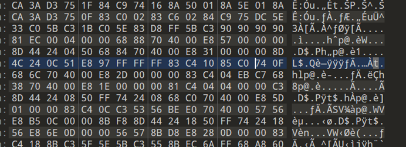
把此处的字节 74（JE）改为 75（JNE）。
参考：跳转指令机器码对照: JO/JNO/JB/JNB/JE/JNE/JBE/JA/JS/JNS/JP/JNP/JL/JNL/JNG/JG/JCXZ/JECXZ/JMP/JMPE - CSDN博客
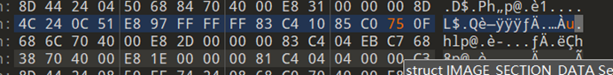
再次运行程序：
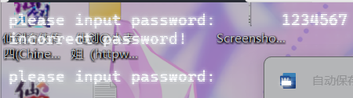
此时 1234567 的字符串修改成功。